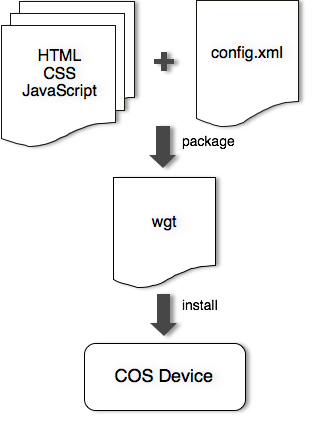

To install your web app on COS devices, you should package it into a wgt format file defined in W3C's Packaged Web Apps standard. Basically, you should define a configuration file named "config.xml" to describe necessary informations of your app, such as app name and version. Then use a Zip utility to package all your source files into a Zip format file and use "wgt" as extension to name it (e.g. "exampleApp.wgt").
Here is example of "config.xml":
<?xml version="1.0" encoding="UTF-8"?>
<widget xmlns = "http://www.w3.org/ns/widgets"
id = "http://example.org/exampleApp"
version = "2.0">
<name short="Example 2.0">
The example App!
</name>
<description>
A sample app to demonstrate some of the possibilities.
</description>
<author href = "http://foo-bar.example.org/"
email = "foo-bar@example.org">Foo Bar Corp</author>
<icon src="icons/example.png"/>
<content src="index.html"/>
</widget>
Most elements are self-explanation. Note that "id" attribute of "widget" element is the unique identifier for your application.
The "content" element defines the start page of your application.
COS defines extended configurations which is beyond the scope of the W3C standard. To use extended configurations, be sure XML namespace "cos" was declared on "widget" element. An example of declaring the cos namespace:
<widget xmlns:cos="http://china-liantong.com/ns/widgets">
The "cos:setting" element is introduced to customize some behaviors for applications. For example, the default screen orientation for an application can be configured by attribute "orientation", the available values are "portrait"(default), "landscape" and "sensor".
A full example of config.xml shows how to set the screen orientation feature to "sensor" mode.
<?xml version="1.0" encoding="UTF-8"?>
<widget xmlns="http://www.w3.org/ns/widgets"
xmlns:cos="http://china-liantong.com/ns/widgets"
version="2.0 beta"
id="http://yourdomain/foo">
<name>foo</name>
<content src="index.html"/>
<cos:setting orientation="sensor"/>
</widget>
Web applications are granted very limited permissions by default, which follows COS's security principle. If your applications need special permissions, you should declare the requested permissions in the configuration file explicitly. COS Web Runtime will ensure none-authorized applications can't use the specific permission at run time.
To declare a required permission, you need to add a
<feature name="http://china-liantong.com/webruntime/api/geolocation" require="true"/>
Below is a list of supported permissions / features:
| Feature | Description | |
|---|---|---|
| http://china-liantong.com/webruntime/api/systemXHR | Use system XMLHttpRequest | |
| http://china-liantong.com/webruntime/api/indexedDB-unlimited | Unlimited use of indexedDB | |
| http://china-liantong.com/webruntime/api/camera | Use camera | |
| http://china-liantong.com/webruntime/api/geolocation | Use geolocation service | |
| http://china-liantong.com/webruntime/api/tcp-socket | Use TCPSocket API |
TBD